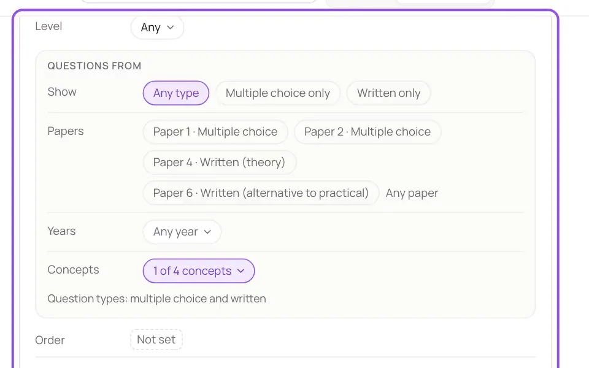
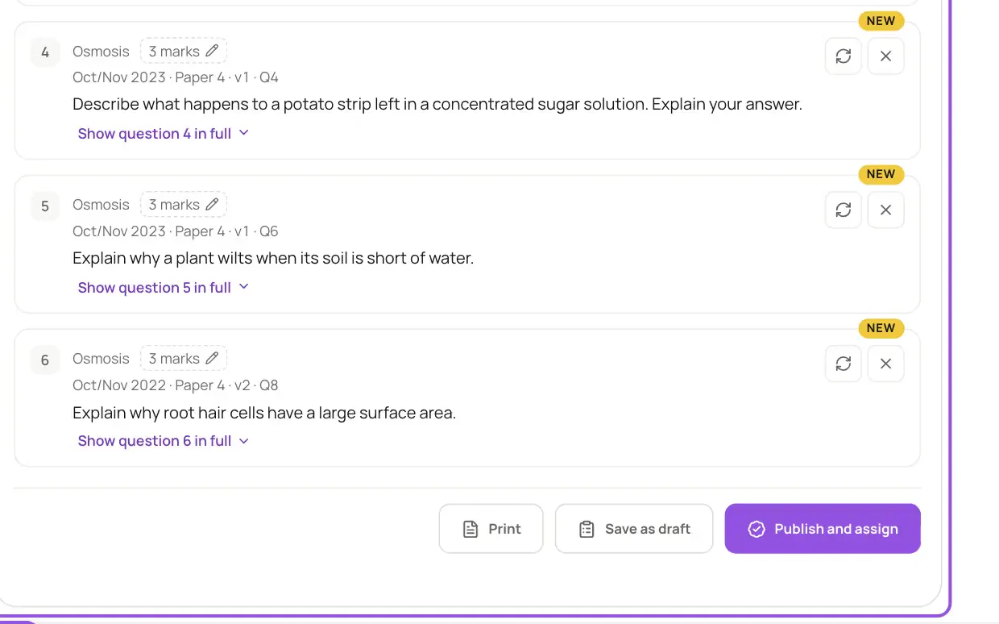
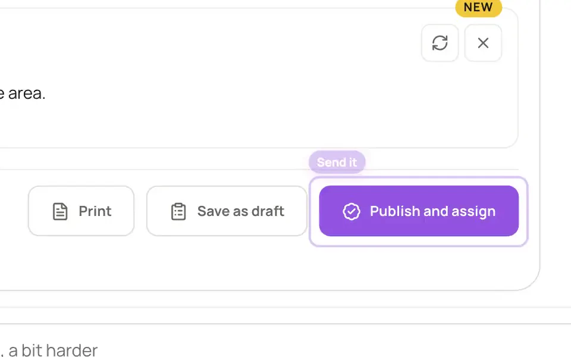

Built from your question bank
Klaro plans the set from the papers, years and topics in your course. You can change the plan before it's built.
About the course builder
Say what your students need, and it's written and sent: every question comes from a real past paper in your course. Answers come back marked.
Type or say something like “10 questions on osmosis, some structured, a bit harder, nothing from 2019”. Klaro picks the questions from your course's question bank and shows the paper each one comes from.

Every question comes from a real past paper, and nothing goes out until you've checked it.
Klaro plans the set from the papers, years and topics in your course. You can change the plan before it's built.
About the course builder
Each question carries its paper, year and number. Swap one or drop it with a tap, or just ask: “add one on diffusion”.
About practice questions
Publish and assign it to your students, save it as a draft, or print it. Homework checks each answer as it's given; a quiz runs to your time limit.
About marking

Psychological Science, 2006
Students who practised recalling a passage remembered more of it a week later than students who studied it again.
Roediger & Karpicke (2006). Test-enhanced learning: taking memory tests improves long-term retention. Psychological Science, 17(3), 249–255.
How Klaro uses researchIn Klaro: homework and quizzes made of real past-paper questions, set in a sentence.

Your lectures, your book and real past papers, linked to each other. Nothing in your course is made up.
Students learn from your recordings, in the order you set.
Every question comes from a real exam paper, and says which.
The Klaro team checks every course before your students see it.
Change any mark before a result reaches a student.
No. Every question comes from your course's question bank: real past papers and their mark schemes. Klaro picks them and shows the paper each one came from.
Homework has no time limit and checks each answer as soon as it's given, with the right answer and where it was explained. A quiz runs to your time limit and shows the score, with the answers after the last attempt.
Yes. Print the set, or download one PDF per student.